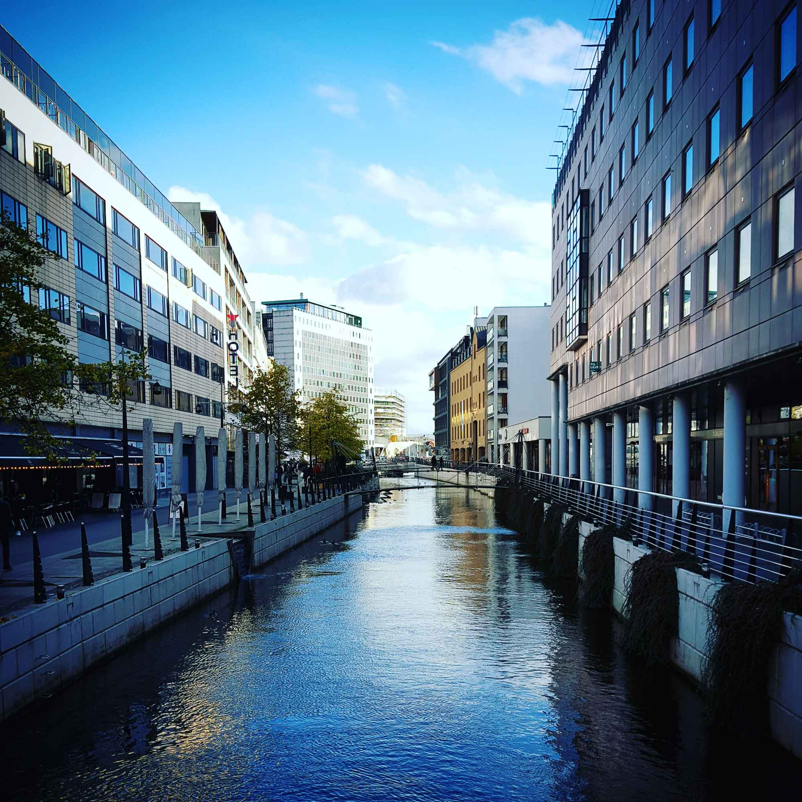

<!DOCTYPE html>
<html lang="en">
<head>
    <meta charset="UTF-8">
    <meta name="viewport" content="width=device-width, initial-scale=1.0">
    <link href="https://fonts.googleapis.com/css2?family=Lato:ital,wght@0,100;0,300;0,400;0,700;1,100;1,300&family=Roboto:ital,wght@0,100;0,300;0,400;0,500;1,100;1,300;1,400&display=swap" rel="stylesheet">
    <link rel="stylesheet" href="./css/lokken.css">
    <title>Destination Denmark | Lokken</title>
</head>

</html>
<body>
    <header>
        <div class="overlay"></div>
        <nav class="nav__bar--desktop">
            <div class="nav__container">
                <div class="left__menu">
                    <ul class="left__menu--list">
                        <a href="#"><li>BLOG</li></a>
                        <a href="#" class="destination"><li>DESTINATIONS</li></a>
                        <a href="#"><li>TRAVEL TIPS</li></a>
                    </ul>
                </div>
                <a href="index.html"></a>
                <div class="right__menu">
                    <ul class="right__menu--list">
                        <a href="#"><li>PHOTOGRAPHY</li></a>
                        <a href="#"><li>ABOUT US</li></a>
                        <a href="#"><li>CONTACT US</li></a>
                    </ul>
                </div>
            </div>
        </nav>
    
        <section class="main__section">
            <h1>LØkken</h1>
            <p>Løkken is a classical beach town on the west coast of North Jutland. You will find some of the best beaches in Denmark, beautiful nature and lots of activities and attractions.</p>
        </section>
    </header>
    
    <main>
        <article class="main__article">
            <div class="article__left--container">
                <div class="section__one">
                    <h2>The Perfect Place to Relax</h2>
                    <p>Lokken is a small town in northwest part of Denmark. It began as a fishing village, but now is mostly known as a place where you can relax, enjoying the best sunsets ever.<br>The beach is a few kilometers long, around 100 meters wide and the neat thing is that you can drive on the beach with no worries. You can find a place just for you, far away from the crowds, make a barbecue or a fire in the evening, you can get a tan during the day and also take a bath into the North Sea.<br>
                    Who knows, maybe you can run into a baby seal, like I did last year. Definetly a place to visit, enjoy and have fun.<br>So far this is my favourite place to go when I need to relax and enjoy the silence.</p>
                </div>
                <div class="section__two">
                    <h2>Visit Rubjerg Knude Fyr</h2>
                    <p>Rubjerg Knude Fyr is located on some high hills (rarely found in Denmark by the way) and if you go there...oh the landscape. Of course, you can climb the tower's stairs and enjoy the view from there.<br>
                    The tower was moved recently 70m (or so) away from the beach, because it was in danger to calapse  to the beach, being to close to the cliff's edge.<br>For photographers(enthusiasts or proffessionals) it is one of the best places to take shots with a beautiful landscape, with a lighthouse in foreground and an amazing sea in the background.</p>
                </div>
                <div class="section__three">
                    <h2>Take a swim  into the North Sea</h2>
                        <p>Hey, sea lovers! This is your chance. Find a place to stay on this large beach in Lokken and enjoy taking a bath in the North Sea. Water might be a little bit cold (West Denmark is in general a bit colder), but this is not going to stop you, right?<br>As I've said in the last article, this is my favourite place in Denamark, but it is also my favourite place to take a swim.<br>Enjoy!</p>
                </div>
            </div>
            <div class="article__right--container">
                <div class="weather">
                    <h4>Cloudy</h4>
                    <h3>10&#176;C</h3>
                </div>
                <div class="accommodations">
                    <h4>Accomodations - from 300kr.</h4>
                    <a href="#">Hotel Buenavista</a>
                    <a href="#">Hotel Rugbrod</a>
                    <a href="#">Hotel Montreal</a>
                    <a href="#">Hotel Belvedere</a>
                    <a href="#">Hotel Capitol</a>
                </div>
                <div class="camping">
                    <h4>Camping Sites - from 200kr</h4>
                    <a href="#">Camping Rugbrod</a>
                    <a href="#">Camping Buenavista</a>
                    <a href="#">Camping Montreal</a>
                    <a href="#">Camping Belvedere</a>
                    <a href="#">Camping Capitol</a>
                </div>
                <div class="map">
                    <h4>How to get here</h4>
                    <div class="maps">
                    </div>
                </div>
            </div>
        </article>
    
        <section class="instagram">
            <div class="instagram__container">
                
                
                
                
                
                
            </div>
            <div class="instagram__link">
                <a href="https://www.instagram.com/robertoenea_photographer/?hl=en" target=”_blank”>Join 1500+ followers on Instagram</a>
            </div>
        </section>
    </main>
    
    <footer class="footer">
        <div class="footer__container">
            <div class="other__resources">
                <h4>Other resources</h4>
                <p>other resources</p>
                <p>other resources</p>
                <p>other resources</p>
                <p>other resources</p>
            </div>
            <div class="follow__us">
                <h4>Follow Us On Social Media</h4>
                <div class="social__media">
                    <i class="fab fa-instagram-square"></i>
                    <i class="fab fa-facebook-square"></i>
                    <i class="fab fa-twitter-square"></i>
                    <i class="fab fa-youtube-square"></i>
                    <i class="fab fa-pinterest-square"></i>
                </div>
                <p>&copy;copyright DESTINATION DENMARK | all rights reserved</p>
            </div>
            <div class="photography__tips">
                <h4>Photography Tips</h4>
                <p>other resources</p>
                <p>other resources</p>
                <p>other resources</p>
                <p>other resources</p>
            </div>
        </div>
    </footer>
</body>
